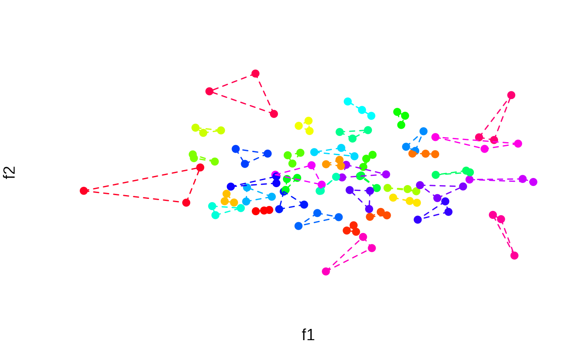
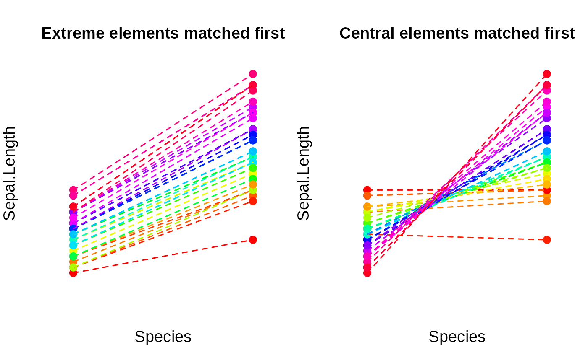

Conduct K-partite or unrestricted (minimum distance) matching to find pairs or groups of similar elements. By default, finding matches is based on the Euclidean distance between data points, but a custom dissimilarity measure can also be employed.
matching( x, p = 2, match_between = NULL, match_within = NULL, match_extreme_first = TRUE, target_group = NULL, sort_output = TRUE )
Arguments
| x | The data input. Can be one of two structures: (1) A data
matrix where rows correspond to elements and columns correspond
to features (a single numeric feature can be passed as a
vector). (2) An N x N matrix dissimilarity matrix; can be an
object of class |
|---|---|
| p | The size of the groups; the default is 2, in which case the function returns pairs. |
| match_between | An optional vector, |
| match_within | An optional vector, |
| match_extreme_first | Logical: Determines if matches are first
sought for extreme elements first or for central
elements. Defaults to |
| target_group | Currently, the options "none", smallest" and "diverse" are supported. See Details. |
| sort_output | Boolean. If |
Value
An integer vector encoding the matches. See Details for more information.
Details
If the data input x is a feature matrix, matching is based
on the Euclidean distance between data points. If the argument
x is a dissimilarity matrix, matching is based on the
user-specified dissimilarities. To find matches, the algorithm
proceeds by selecting a target element and then searching its
nearest neighbours. Critical to the behaviour or the algorithm is
the order in which target elements are selected. By default, the
most extreme elements are selected first, i.e., elements with the
highest distance to the centroid of the data set (see
balanced_clustering that relies on the same
algorithm). Set the argument match_extreme_first to
FALSE, to enforce that elements close to the centroid are
first selected as targets.
If the argument match_between is passed and the groups
specified via this argument are of different size, target elements
are selected from the smallest group by default (because in this
group, all elements can be matched). However, it is also possible
to specify how matches are selected through the option
target_group. When specifying "none", matches are
always selected from extreme elements, irregardless of the group
sizes (or from central elements first if match_extreme_first
= FALSE). With option "smallest", matches are selected from
the smallest group. With option "diverse", matches are
selected from the most heterogenous group according to the sum of
pairwise distances within groups.
The output is an integer vector encoding which elements have been
matched. The grouping numbers are sorted by similarity. That is,
elements with the grouping number »1« have the highest intra-group
similarity, followed by 2 etc (groups having the same similarity
index are still assigned a different grouping number,
though). Similarity is measured as the sum of pairwise (Euclidean)
distances within groups (see distance_objective). To
prevent sorting by similarity (this is some extra computational burden),
set sort_output = FALSE. Some unmatched elements may be NA.
This happens if it is not
possible to evenly split the item pool evenly into groups of size
p or if the categories described by the argument
match_between are of different size.
Note
It is possible to specify grouping restrictions via
match_between and match_within at the same time.
Examples
# Find triplets N <- 120 lds <- data.frame(f1 = rnorm(N), f2 = rnorm(N)) triplets <- matching(lds, p = 3) plot_clusters( lds, clusters = triplets, within_connection = TRUE )# Bipartite matching with unequal-sized groups: # Only selects matches for some elements N <- 100 data <- matrix(rnorm(N), ncol = 1) groups <- sample(1:2, size = N, replace = TRUE, prob = c(0.8, 0.2)) matched <- matching(data[, 1], match_between = groups) plot_clusters( cbind(groups, data), clusters = matched, within_connection = TRUE )# Match objects from the same category only matched <- matching( schaper2019[, 3:6], p = 3, match_within = schaper2019$room ) head(table(matched, schaper2019$room))#> #> matched bathroom kitchen #> 1 0 3 #> 2 3 0 #> 3 0 3 #> 4 0 3 #> 5 3 0 #> 6 3 0# Match between different plant species in the »iris« data set species <- iris$Species != "versicolor" matched <- matching( iris[species, 1], match_between = iris[species, 5] ) # Adjust `match_extreme_first` argument matched2 <- matching( iris[species, 1], match_between = iris[species, 5], match_extreme_first = FALSE ) # Plot the matching results par(mfrow = c(1, 2)) data <- data.frame( Species = as.numeric(iris[species, 5]), Sepal.Length = iris[species, 1] ) plot_clusters( data, clusters = matched, within_connection = TRUE, main = "Extreme elements matched first" ) plot_clusters( data, clusters = matched2, within_connection = TRUE, main = "Central elements matched first" )